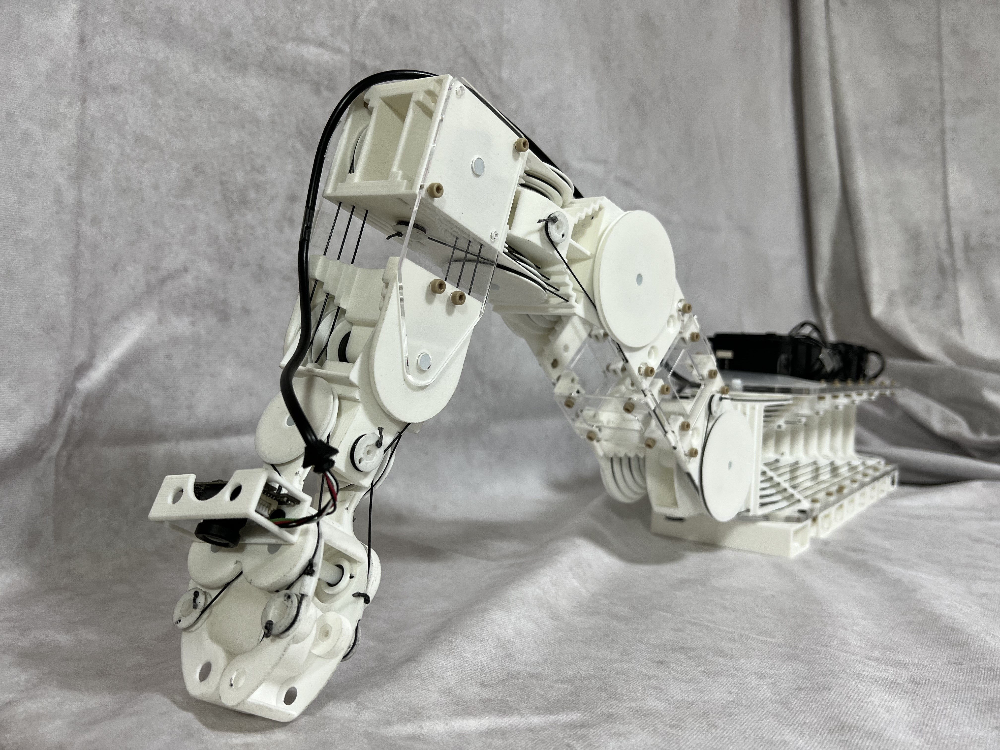
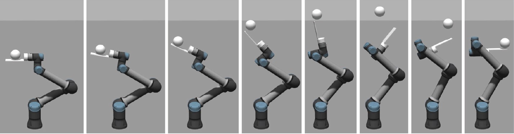

Recent works
Twist Snake
Twist Snake: Plastic table-top cable-driven robotic arm with all motors located at the base link, Kazutoshi Tanaka, Masashi Hamaya, IEEE International Conference on Robotics and Automation (ICRA), pp. 7345-7351, doi: 10.1109/ICRA48891.2023.10160995, London, United Kingdom, 2023. [Paper] [Video] [Project HP]
Continuum-Body-Pose Estimation

Continuum-Body-Pose Estimation From Partial Sensor Information Using Recurrent Neural Networks, Kazutoshi Tanaka, Yuna Minami, Yuji Tokudome, Katsuma Inoue, Yasuo Kuniyoshi, Kohei Nakajima, IEEE Robotics and Automation Letters, vol. 7, no. 4, pp. 11244-11251, doi: 10.1109/LRA.2022.3199034, October, 2022. [Paper]
Learning Robotic Contact Juggling
Learning Robotic Contact Juggling, Kazutoshi Tanaka, Masashi Hamaya, Devwrat Joshi, Felix von Drigalski, Ryo Yonetani, Takamitsu Matsubara, Yoshihisa Ijiri, IEEE/RSJ International Conference on Intelligent Robots and Systems (IROS), pp. 958-964, doi: 10.1109/IROS51168.2021.9636790, Prague, Czech Republic, 2021. [Paper] [Project HP]
TRANS-AM
TRANS-AM: Transfer Learning by Aggregating Dynamics Models for Soft Robotic Assembly, Kazutoshi Tanaka, Ryo Yonetani, Masashi Hamaya, Robert Lee, Felix von Drigalski, Yoshihisa Ijiri, IEEE International Conference on Robotics and Automation (ICRA), pp. 4627-4633, doi: 10.1109/ICRA48506.2021.9561081, Xi'an, China, 2021. [Paper] [Video] [Slide] [Blog(En)] [Project HP]
Soft Wrist

A Compact, Cable-driven, Activatable Soft Wrist with Six Degrees of Freedom for Assembly Tasks, Felix von Drigalski, Kazutoshi Tanaka, Masashi Hamaya, Robert Lee, Chisato Nakashima, Yoshiya Shibata, Yoshihisa Ijiri, IEEE/RSJ International Conference on Intelligent Robots and Systems (IROS), pp. 8752-8757, Las Vegas, USA, October, 2020. [Paper] [Video]